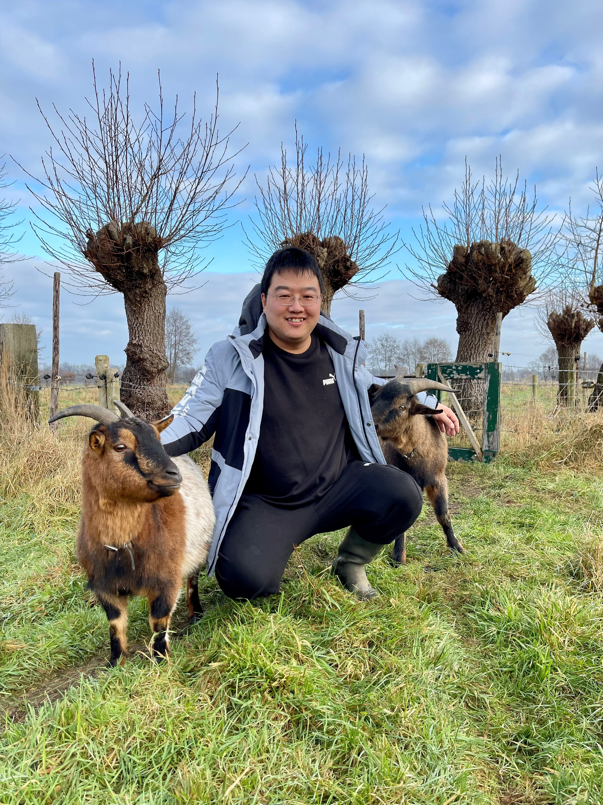

Yingjun Du
杜英军
Postdoctoral Researcher, University of Amsterdam, AIM Lab
Meta-learning, few-shot learning, and vision-language models.
About
I am a postdoctoral researcher at the University of Amsterdam and a member of the ELLIS program on learning with limited data. I work with Cees Snoek and have also collaborated with Xiantong Zhen. Before joining UvA, I completed my master's degree in Software Engineering at Beihang University.
News
-
2025
ICLR 2025: CaPo accepted.
-
2024
NeurIPS 2024: IPO accepted.
-
2024
TPAMI 2024: MetaKernel published.
-
2023
NeurIPS 2023: ProtoDiff accepted.
-
2023
ICML 2023: MetaModulation accepted.
-
2023
CVPR 2023: SuperDisco accepted.
-
2022
ICLR 2022: Hierarchical Variational Memory accepted.
-
2021
ICLR 2021: MetaNorm accepted.
-
2020
NeurIPS 2020: Variational Semantic Memory accepted.
-
2020
ICML 2020: Variational Random Features accepted.
Selected Publications
- IPO: Interpretable Prompt Optimization for Vision-Language Models NeurIPS 2024
- ProtoDiff: Learning to Learn Prototypical Networks by Task-Guided Diffusion NeurIPS 2023
- MetaModulation: Learning Variational Feature Hierarchies for Few-Shot Learning with Fewer Tasks ICML 2023
- SuperDisco: Super-Class Discovery Improves Visual Recognition for the Long-Tail CVPR 2023
Contact
Email: y.du@uva.nl
Science Park 900, LAB42, University of Amsterdam